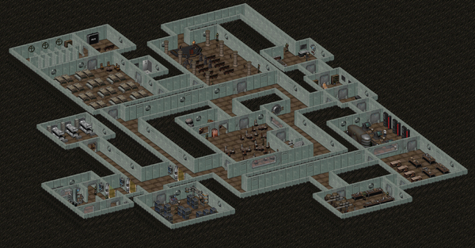
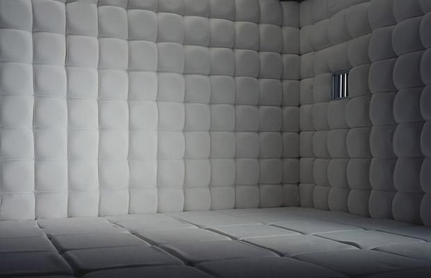

Essay Page
A Modest Proposal:
A Solution to Bullying
Bullying has been around longer than the recorded human history, always seen as a normal thing in the past, never has it been seen as an issue as bad as it is seen today. Bullying is an unsolved social issue involving people with hostile intent, imbalance of power, repetition, distress, and provocation. This was never seen as an issue until it was brought up in recent years. The rise of technology has given people a new way to bully people over the internet while they can intentionally stay anonymous. Many have tried to eradicate it, hosting seminars, programs, and anti-bullying rules, but none have succeeded in completely bringing down its numbers. Bullying also affects the rates of suicide because of the emotional and physical trauma the victims go over, they think that killing themselves is the best solution to ending the pain they suffer from, when it doesn’t. The purpose of this proposal is to drastically decrease the bullying cases and the suicide cases caused by it.

It starts with the offenders and the victims thrown inside a compound, as test subjects of a number of scientists. These scientists will perform multiple tests on their new lab rats, of which are the common mental health checks, and the write-your-experiences assessments. These will provide them sufficient information on how badly the victim is affected by the bullying he has gone through. The parents of the victim will receive a compensation of riches in different forms depending on how badly their child was damaged from the bullying they received. The victims will then receive utmost care and attention they need to heal from the damages they are healing from. The bullies on the other hand will be treated differently. They will be put through a legitimate lie detector test, being asked questions that should make them hesitant to answer. Whenever they are detected to be lying, it will affect the weight of their punishments. This test will basically force them to confess on what they did to their victims. After answering every question, they will be forced to say that they are shameful citizens of society for picking on the weaker and not being strong enough to bully those of equal strength or stronger. If they try to refuse saying the line, their hands will be dipped on a bucket of boiling water, to add more salt to their shameful wounds, their confessions will be recorded and sent to his family. With this, their trauma will start building up and they’ll start feeling that they are not the strongest people of the society.

The next step in this big experiment is to throw them inside a small, dark, and sound-proof asylum for six hours every day, this will serve as their only time to rest after the mental and physical trauma they will go through for the next seven days. The seven days will be their time to repent from their sins. They will be thrown in a prison setting for eighteen hours every day, they will be living with prisoners of many crimes whom will be the key to the next step of this experiment. These criminals will be verbally abusing them and physically abusing them at acceptable rates. This step of the experiment will be to break the mentality of the bullies that they are the strongest of this society. Once they break, they will be immediately taken and will be given the test that were given to their victims, but will still be under a lie detector test to ensure that the bullies aren’t acting to get away from this whole experiment. Their improvements will then be recorded, and they’ll soon get the recovery they need after receiving a controlled amount of trauma. As for those that were acting to get out of this experiment, will be given another seven-day punishment. And for those that will start bullying after already being in this experiment, they will be given much heavier punishments for repeating.
My proposal is an absolute solution to finally stop the never-ending issue of bullying. While it is an absolute solution, it isn’t a very appropriate and realistic solution that will benefit all sides of the issue. The only realistic solution is to encourage those that are becoming victims and already victims to confess once they feel very offended and uncomfortable. The adults of this society should take the issue more seriously and not let those bullies get past that barrier. The bullies should get the correct magnitude of punishment and not receive the minimum, nor the maximum magnitude, and shall receive the maximum if he or she repeats it. Those witnesses of these bullying cases should step up and speak out the truth in order to speed up the cases, for that is the only real solution to bullying.
A Modest Proposal: A Solution to Bullying
Writer's message
The inspiration on why I wrote this essay is because bullying is a social issue that has never been fully eradicated from this society. Even though many organizations have put in a lot of effort into reducing the bullying cases, almost none of it work.
Then there's the English-Computer Science Project, Sir Franco required us to create a satirical essay about a social issue, and it will be a merged project with Computer Science. I obviously picked bullying as my topic for the essay, and it brought me here today, creating the webpage for it.
Creating this webpage was stressful because I'm not very creative, and the webpage was supposed to be creative. I'm also kind of bad at HTML in the first place and I almost cried writing the CSS for multiple parts of this webpage. Yet it was fun in the end after i got the hang out of it.
The webpage looked somewhat great in the end, even though it didn't look exactly what I was picturing in my head.
Copyright © 2020. Doniel Ray Medrano.